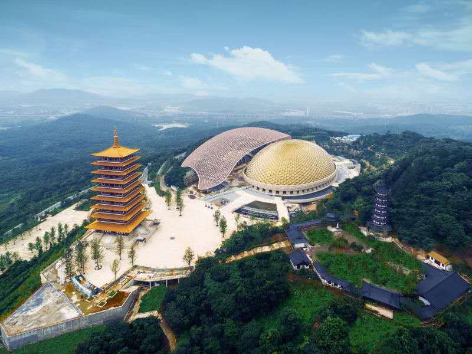
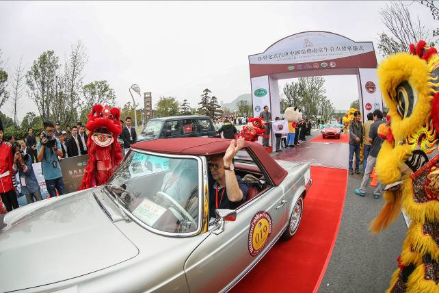

In golden October when trees getting colours, CLASSIC CARS CHALLENGE CHINA (4C for short), which combined with luxury, fashion, passion and glory, landed in China again. This was the sixth time when the world-class festival of vintage cars came on the stage of this ancient nation.
The whole event started from the Water Gate of the Great Wall on October 12th. It crossed the Chinese golden hinterland between China and Shanghai and created a magnificent picture in the ancient, thriving and wonderful land of China and aroused the whole town to turn out and attracted people’s attention to the vintage cars.
2016 is the 130th anniversary of the birth of cars and also the 50th universary of the establishment of FIVA and the 60th universary of the beginning of the auto mass production in China. The sixth 4C just arrived in time in this special year. Approved by UNESCO and Fédération Internationale des Véhicules Anciens (FIVA), co-organised by China Association of Automotive Manufacturer(CAAM) and Classic Vehicle Union of China (CVUC), 4C has been included in the 2016 World Motoring Heritage Year Programme approved by UNESCO in China.
4C is the first and only high-end classic car event placed on the FIVA International Calendar.
This event gathered more than 50 classic cars from more than 13 countries including the world famous auto brands Ferrari, Rolls Royce, Chrysler, Aston Martine, MG, Mercedes Benze, Porsche, Jaguar, Alfa Romeo, Maserati, BMW, etc.
The rally started in Beijing on October 12th, 2016 and ended in Shanghai on October 19th, the journey crossed the richest part of the Chinese hinterland like Baoding, Jinan, Xuzhou, Nanjing, and Suzhou.
2016 4C is characterized by Chinese tradition and oriental culture characteristics and is paised by participants as a classic movie with tense activities and oriental splendidness.
On October 11th, all the participants joined the tourism to the Forbidden City and Temple of Heaven organized by the 4C Organizing Committee, who were astonished by the splendor and majestic Chinese ancient structure. In the evening, the 4C Organizing Committee held a grand official welcoming dinner titled by Experiencing China. Over 200 people attended including participants, distinguished guests and media friends. A wonderful and charming performance with luxury and elegance impressed everyone deeply who attended the dinner.
On October 12th, the motorcade gethered in The Water Gate of the Great Wall. At the witness of international and domestic guests, medias and local tourists, 4C 2016 started its great journey of more than 1,800 km. After the opening ceremony, the motorcade drove across picturesque roads and arrived in Baoding on the same day.
On October 13th, the motorcade encountered heavy fog and arrived safely in Jinan, the capital city of Shangdong province.
On October 14th, the motorcade left Jinan to the very famous city considered as a hub on the Central Plain-Xuzhou.
October 15th was the longest section of the rally with a whole distance of about 370 km. With efforts of all participants and staff, the motorcade arrived in Nanjing, former capital city of 7 dynasties and current capital city of Suzhou province, in time and gathered at the Niushou Mountain cultural tourism zone which is known for dedicating the Usnisa of the Buddha.
On October 16th, the Organising Committee held a grand “World Classic Car Expo” at Niushou Mountain cultural tourism zone which attracted many local residents and tourists. In order to experience personally on Buddhist scriptures, the Organising Committee arranged a Meditation Ceremony for participants. Buddha Temple and Buddha Tower on the Niushou Mountain cleaned the heart of every participants.
On October 17th, the Organising Committee held a grand opening ceremony at the square of Niushou Mountain cultural tourism zone. More than 1,000 people including officials of the Organising Committee, local leadership, local residents and tourists. Fabulous cars, coloured ribbon, dancing lions, the motorcaded departed again in cheers heading the “Venice of the East”- Suzhou.
The motorcade was driving along the Tai Lake, the equisite water feature and elegance of the classic cars sketched a picture of the beautiful scenery.
On October 18th, the Organising Committee organised the track day at Youlanju Circuit. After the long driving on national roads, drivers competed with each other this time on accurate timing and blind driving which tested every driver's driving feelings. Every driver was serious about the compititions, the scene from time to time came to cheers, and this was a full and tense day since the beginning of the rally.
On October 19th, the motorcade arrived in Shanghai Auto Museum where a splendid Closing &Awarding ceremony was held. Wearing the garland, all the participants were extremely excited and choked up with emotions when vehicles went through the gate. Afterwards, 12 groups, 9 participants and 10 units were awarded with the trophy by the Organizing Committee. At the night, the Organizing Committee conducted a grand official dinner party where all of the participants, guests from all walks of life and media attended and drank wine and enjoyed a lot. With the warm atmosphere, all people at the dinner party showed gratification of success on their face, and some of them delivered speech, sang songs and drew picture to celebrate the completeness and experience the joy of success.
Many domestic and international organizations participated in 4C event in different forms and contributed to the success of the even of their respective forces. As honorary co-organizers, Shanghai Auto Museum and Sanhe Classic Car Museum sent cars to participate in this event. German AdD/KAC and Niushou Mountain cultural tourism zone took part in for the first time and became the Strategic Partners of the Organizing Committee. No. Nine Garage provided exclusive technical support for the event. Shimofang Jade became the only designated jewelry brand of the event. Bodega San Gabriel became the only designated wine of the event. Many other domestic and international organizations became Offical Partners of the Organizing Committee such as Classic Car Club Hong Kong, Classic Car Club Macau, Ferrari Club China, Leica, Zenith, Coopertires, TRW Automotive Holdings Corp., and Saint-GobainThin Films.
Lots of celebrities and industry elites from home and abroad were drawn to participate in this event, including Doctor Mario Theissen, the first Vice-President of FIVA; Mr Edgar Meyer, President of the Royal Association of Germany; Mr Toni Bienemann, renowned entrepreneur; Mr Marc Cos, renowned classic car collector and many other domestic industry elites and social celebrities such as Mr Shi Jianhua, Deputy Secretary General of CAAM; Ms Xia Jin, Deputy Secretary of Sanya Political and Legal Committee; Mr Wang Feng, General Manager of Beijing Yazhimeng Conference Service Co., Ltd.; Mr Li Weijun, Chairman of Hainan Airline Investment Co., Ltd.; Mr He Ming, Media Secretary of Niushou Mountain cultural tourism zone; Mr Lin Haitao, Executive Director of Shimofang Jade Co., Ltd.; Mr Li Baofeng, General Manager of Bliss Mobil (China), etc.
This event drew many domestic and foreign major medias to participate entirely in this event, including ten world well-known automobile medias and the domestic top-ranking automobile, trend and financial and economic medias who gave highlight report about the event. According to statistics, more than 400 medias have reported this rally and the total number of reports exceeds 3,000. The number of the media who involved in this event and the report about this event set a new record and re-create a great individual event. In the meantime, new media communication such as Wechat was used by the Organizing Committee, by which the dissemination efficiency and effect achieved an ever great success.
4C produced a strong echo throughout China, especially in the cities along the route. Approximately 2,600,000 people came across the rally or went to see it. Media broadcast reached more than 30,000,000 people.
Luxury needs no artificiality, passion burst out naturally. Classic Cars Challenge China which have caused a sensation in China for six years is becoming mature gradually. The world-class vintage cars event with the extreme passion and glory, co-created by competitors, medias, partners and Organizing Committee, is causing an effect on the auto culture development of China. We do believe that the grand auto culture banquet combined with luxury and trend, passion and glory will land in China again in the very near future.
010-63380601 010-63380602
autohelper@sina.com